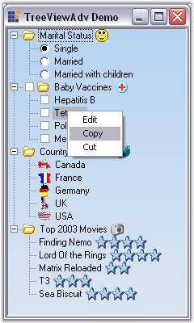

TreeViewAdv control provides option for displaying context menu on right clicking on any node in the TreeViewAdv control. It also let users add custom menu items.
Adding Custom Menu Items
1. Declare and initialize a context menu.
|
[C#]
// Create and initialize a context Menu required private System.Windows.Forms.ContextMenu contextMenu1; this.contextMenu1 = new System.Windows.Forms.ContextMenu();
//Associate the context menu with the TreeView control this.treeViewAdv1.ContextMenu = this.contextMenu1; |
|
[VB.NET]
' Create and initialize a context Menu required Private WithEvents contextMenu1 As System.Windows.Forms.ContextMenu Me.contextMenu1 = New System.Windows.Forms.ContextMenu()
'Associate the context menu with the TreeView control Me.treeViewAdv1.ContextMenu = Me.contextMenu1 |
2. Add the context menu items.
|
[C#]
private System.Windows.Forms.MenuItem editItem; this.editItem = new System.Windows.Forms.MenuItem();
//Add context Menu items this.contextMenu1.MenuItems.AddRange(new System.Windows.Forms.MenuItem[] {this.editItem});
//Pop the context Menu this.contextMenu1.Popup += new System.EventHandler(this.contextMenu1_Popup);
//Set the context menu items this.editItem.Index = 0; this.editItem.Text = "&Edit"; this.editItem.Click += new System.EventHandler(this.editItem_Click); |
|
[VB.NET]
Private WithEvents editItem As System.Windows.Forms.MenuItem Me.editItem = New System.Windows.Forms.MenuItem()
'Add context Menu items Me.contextMenu1.MenuItems.AddRange(New System.Windows.Forms.MenuItem() {Me.editItem})
'Set the context Menu items Me.editItem.Index = 0 Me.editItem.Text = "&Edit" |
3. Defining context menu pop-up.
|
[C#]
// Declared to NULL if the right click is outside the node area . private TreeNodeAdv rightMouseDownNodeCached = null;
// Context menu pop up private void contextMenu1_Popup(object sender, System.EventArgs e) { this.rightMouseDownNodeCached = this.treeViewAdv1.RMouseDownNode; // This will be null if the user clicked in the empty portion of the tree. if(this.treeViewAdv1.RMouseDownNode == null) { this.copyItem.Visible = false; this.cutItem.Visible = false; this.editItem.Visible = false; } else { this.copyItem.Visible = true; this.cutItem.Visible = true; this.editItem.Visible = true; } } |
|
[VB.NET]
' Declared to NULL if the right click is outside the node area . Private rightMouseDownNodeCached As TreeNodeAdv = Nothing
' Context menu Popup Private Sub contextMenu1_Popup(ByVal sender As Object, ByVal e As System.EventArgs) Handles contextMenu1.Popup Me.rightMouseDownNodeCached = Me.treeViewAdv1.RMouseDownNode ' This will be null if the user clicked in the empty portion of the tree. If Me.treeViewAdv1.RMouseDownNode Is Nothing Then Me.copyItem.Visible = False Me.cutItem.Visible = False Me.editItem.Visible = False Else Me.copyItem.Visible = True Me.cutItem.Visible = True Me.editItem.Visible = True End If End Sub |

Figure 1138: "Edit", "Copy" and "Cut" menu items added to the Context Menu
Editing the nodes using "Edit" Menu Item
4.We can include editing functionality when you click the Edit menu item using the EditItem_Click event. In the below example, it calls the BeginEdit method and begins editing the node that is selected.
|
treeViewAdv Methods |
Description |
|
BeginEdit |
Edits the selected node. |
|
BeginEdit(Overloaded) |
Edits the specified node that is passed as the parameter. The parameter is,
node - Indicates the particular node to edit. |
|
EndEdit |
Forces to end the editing of the selected node. It saves or cancels the editing of the selected node based on the bool value passed as parameter.
true - Cancels the editing without saving. false - Saves the changes. |
|
[C#]
//Edits the Selected node this.treeViewAdv1.BeginEdit();
//Edits the Specified node //Context menu item's click events private void editItem_Click(object sender, System.EventArgs e) { if(this.rightMouseDownNodeCached != null) // You can also alternatively turn on F2 label editing for all nodes using the LabelEdit property of the tree. this.treeViewAdv1.BeginEdit(this.rightMouseDownNodeCached); }
this.treeViewAdv1.EndEdit(false); |
|
[VB.NET]
'Edits the Selected node Me.treeViewAdv1.BeginEdit()
'Edits the Specified node 'Context menu item's click events Private Sub editItem_Click(ByVal sender As Object, ByVal e As System.EventArgs) If Not Me.rightMouseDownNodeCached Is Nothing Then 'You can also alternatively turn on F2 label editing for all nodes using the LabelEdit property of the tree. Me.treeViewAdv1.BeginEdit(Me.rightMouseDownNodeCached) End If End Sub
Me.treeViewAdv1.EndEdit(False) |
A sample which includes the Context Menu feature is available in the below installation path.
..\My Documents\Syncfusion\EssentialStudio\Version Number\Windows\Tools.Windows\Samples\2.0\Tree Package\TreeViewAdvDemo
See Also